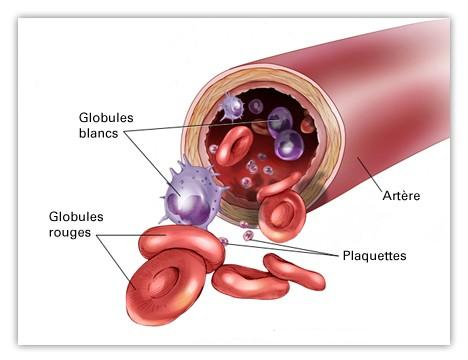

Le sang
La composition du sang
Le sang est compose de 2 parties :
Le plasma est la partie liquide du sang oe sont suspendus les cellules sanguines.
Le plasma est compose d'eau, de substances organiques, de dechets, d'elements mineraux, de gaz dissous, d'hormone et d'anticorps.
Les elements figures du sang sont de 3 sortes :
Le globule rouge ou hematie ou erythrocyte, est une cellule anucleee, ce qui lui permet de circuler dans les capillaires et atteindre les tissus humains.
Les erythrocytes ont pour seule fonction le transport du dioxyde de carbone du tissu aux poumons et du transport de l’oxygene des poumons au tissu : echanges gazeux.
Il contient l'hemoglobine, proteine permettant le transport de l'oxygene et du dioxyde de carbone sur l'un de ses constituants, l'heme.
Le globule rouge contient aussi des enzymes dont le rele est de produire de l'energie en catabolisant le glucose et permet ainsi de le faire vivre.
Les plaquettes sont des petites lamelles en circulation dans le sang, elles ont un rele fondamental dans l'hemostase.
Le globule blanc est une cellule jouant un rele dans la defense de l'organisme contre les corps etrangers, les agents pathogenes et les processus inflammatoires.
Les leucocytes se divisent en 2 groupes :
La repartition des leucocytes est la suivante :
Ils ont un rele de lutte contre l’inflammation et contre l’infection. Ils ont egalement un rele de tueur vis-e-vis des microbes : phagocytose.
Ils ont un rele fondamental dans les phenomenes de defense immunitaire.
Ces lymphocytes vont reconnaetre les elements etrangers et vont declencher une reaction dans le but de les eliminer.
Les monocytes jouent un rele dans les phenomenes immunitaires.
Le monocyte naet dans la moelle osseuse, il est transporte par le sang jusque dans les tissus oe il se transforme puis se fixe : ils devient un macrophage.
La formation et le renouvellement du sang
L'hematopoeese est le processus par lequel se forment les elements figures du sang.
La formation des globules sanguins d'effectue au niveau de la moelle osseuse.
Dans la moelle osseuse, se trouve des cellules souches pluripotentes (potentialites multiples). Ces cellules souches vont, apres division, donner naissance e des cellules capables de se differencier et qui sous l'influence de stimuli vont donner naissance aux differentes lignees :
La lignee erythrocytaire : donne naissance aux hematies, c'est l'erythropoeese. Ce phenomene est regule par une hormone, l'erythropoeetine, qui stimule la maturation et la proliferation de l'erythrocyte.
La lignee granulocytaire : donne naissance aux polynucleaires.
La lignee plaquettaire : donne naissance aux plaquettes. La differenciation des cellules souches est sous la dependance d'une hormone, la thrombopoeetine.
La lignee lymphocytaire : donne naissance aux lymphocytes. Ceux-ci vont, e leur tour, se differencier en sous-populations : lymphocyte T et lymphocyte B.
Voir aussi :
|
Accueil
| Sciences infirmieres |
Soins et techniques
|
Pharmacologie et Therapeutiques
|
Examens
biologiques |
Examens medicaux
| Version imprimable e Samir ISP tous droits reserves design : xgraphik.com modifie par M. Pitte |
 haut
de page
haut
de page